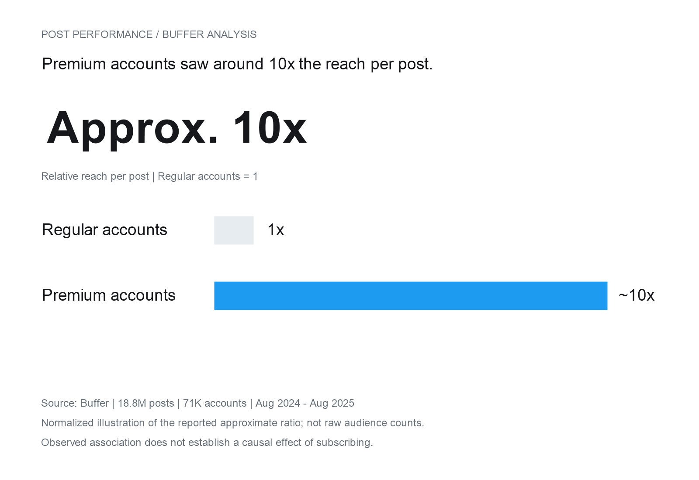
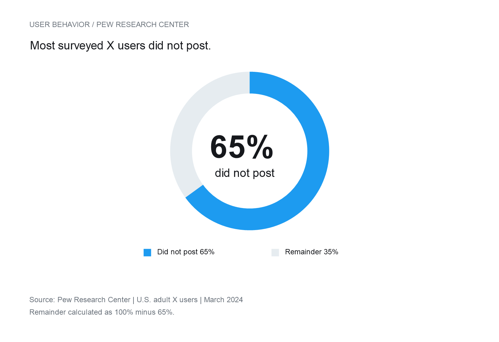
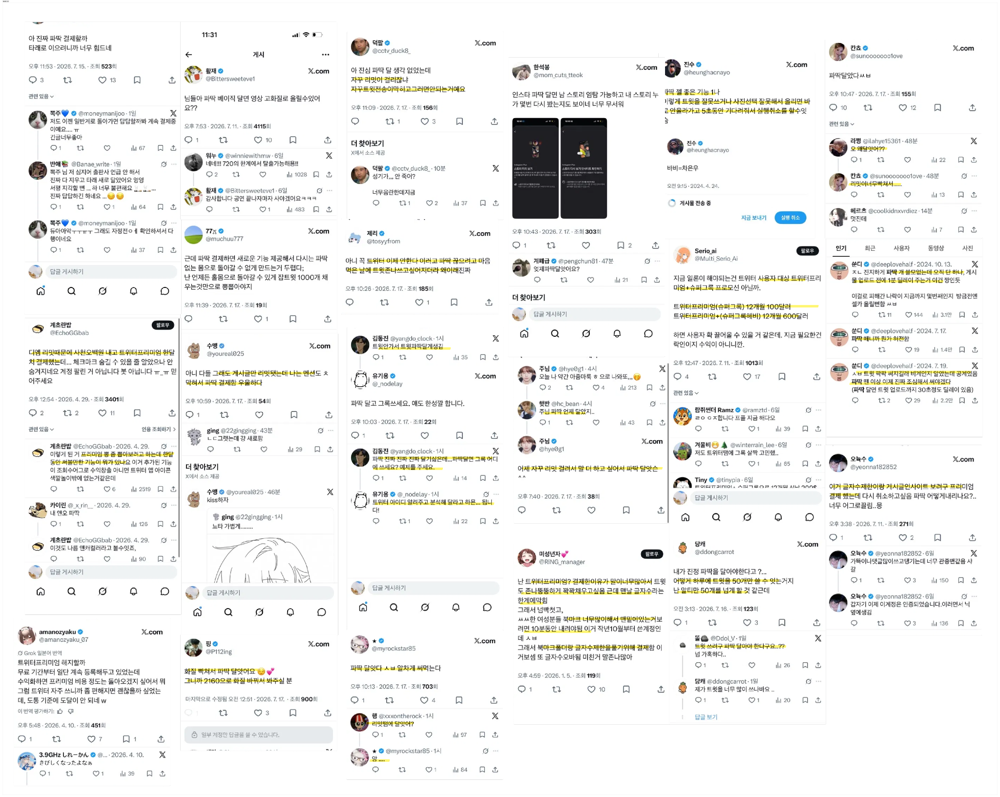

Case study 02
X Premium Redesign
PROJECT OVERVIEW
This independent project explores how X’s mobile experience could make Premium more relevant to people who primarily browse rather than post.
The proposed redesign focuses on two activities: finding previously seen posts and revisiting saved content. It explores how improved search and bookmark experiences could address readers’ needs and give them a clearer reason to consider Premium.
I conducted surveys and interviews, defined the design direction, and developed the proposed experience. User testing is planned to evaluate usability, perceived value, and willingness to subscribe.
PROBLEM
What makes Premium worth paying for when you mainly browse?
Many people use X without posting, while Premium accounts show a substantial advantage in post reach. This raised a question: what could make Premium worth considering for people who mainly browse?


Pew Research Center · U.S. adult X users · March 2024
Buffer · 18.8M posts, 71K accounts · Aug 2024–Aug 2025
PUBLIC USER FEEDBACK
Paying for Premium did not always mean seeing its value.
Public posts revealed accounts of subscribing to avoid limits, uncertainty about benefits, and hesitation about cancelling. These experiences raised a question: what would make Premium a choice users actively wanted to make?

01 · Subscribing to avoid limits
Some posts described paying to continue activities interrupted by limits.
02 · Questioning the value after paying
Others expressed uncertainty about what their subscription actually offered.
03 · Paying for specific needs
Features such as bookmark folders and editing gave some users a concrete reason to subscribe.
Exploratory review of selected public posts on X.
DESIGN CHALLENGE